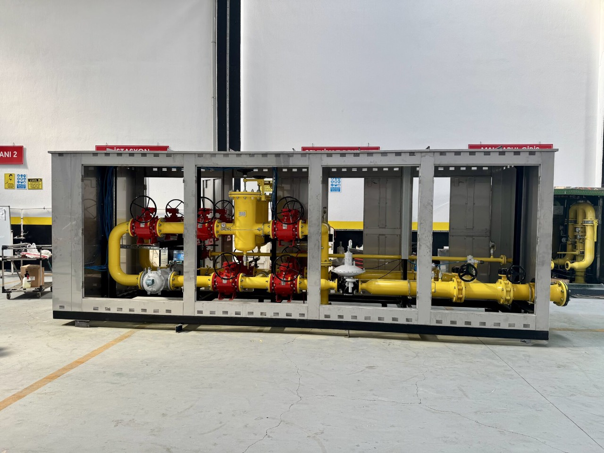
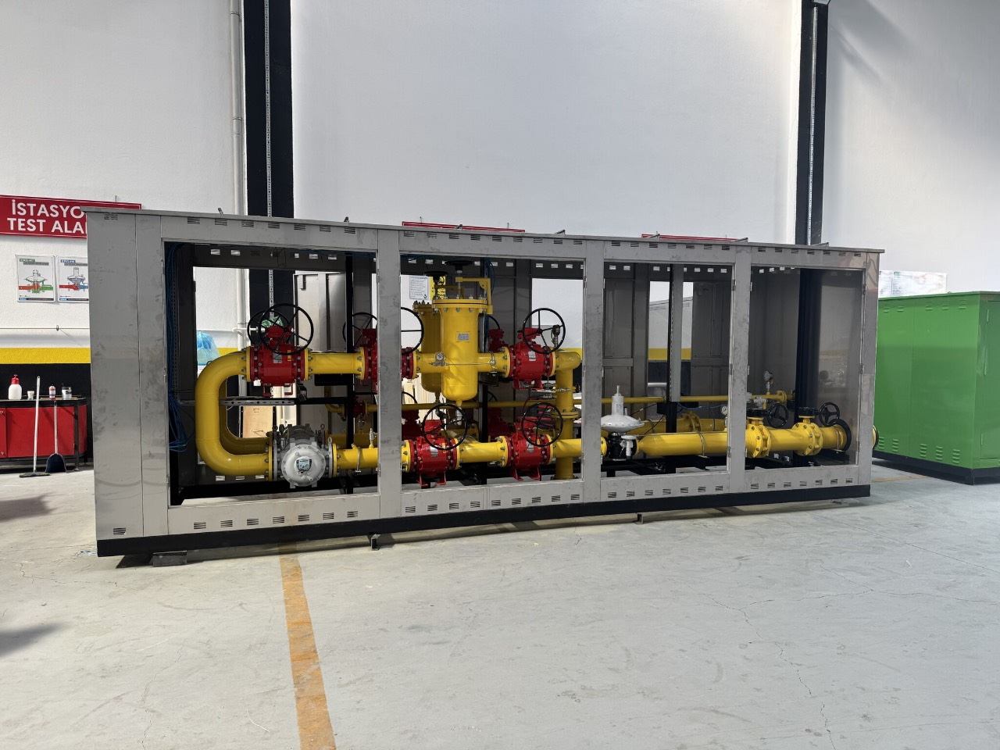
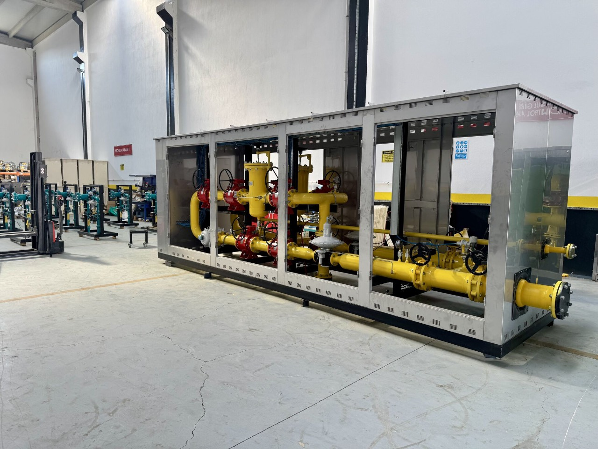
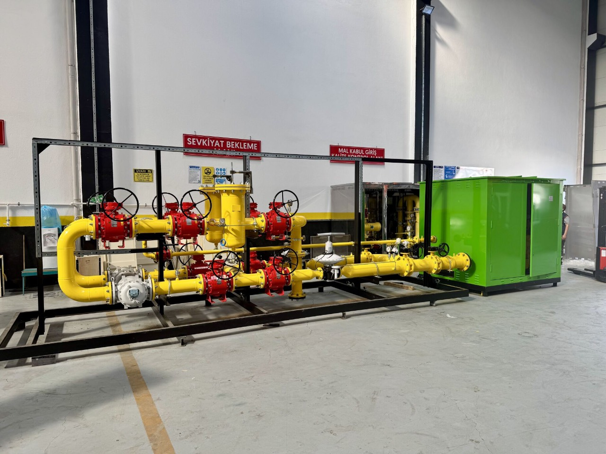
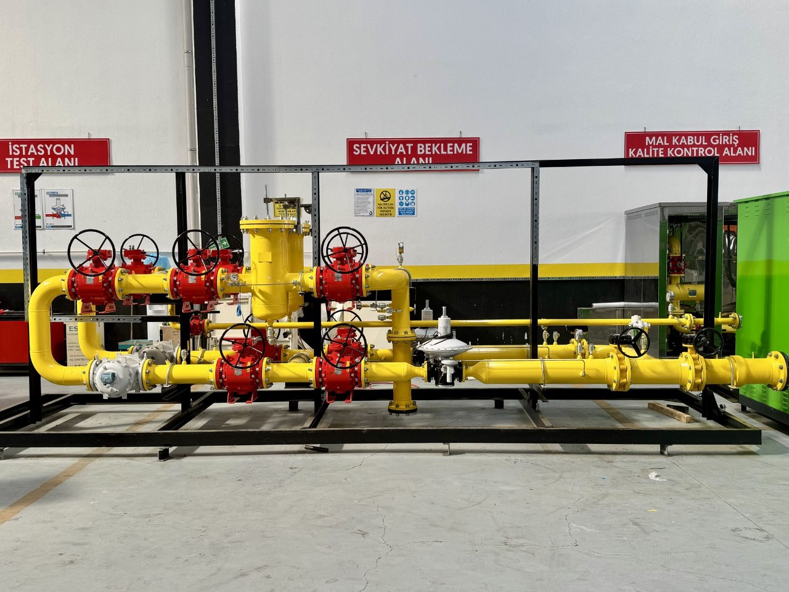
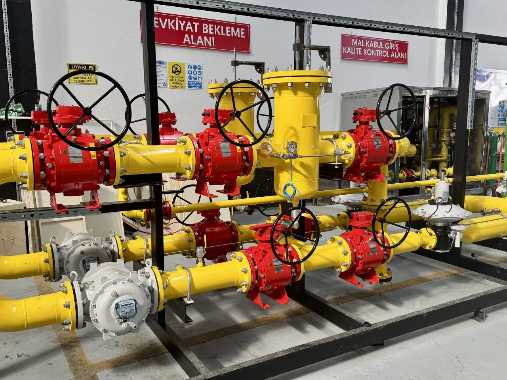
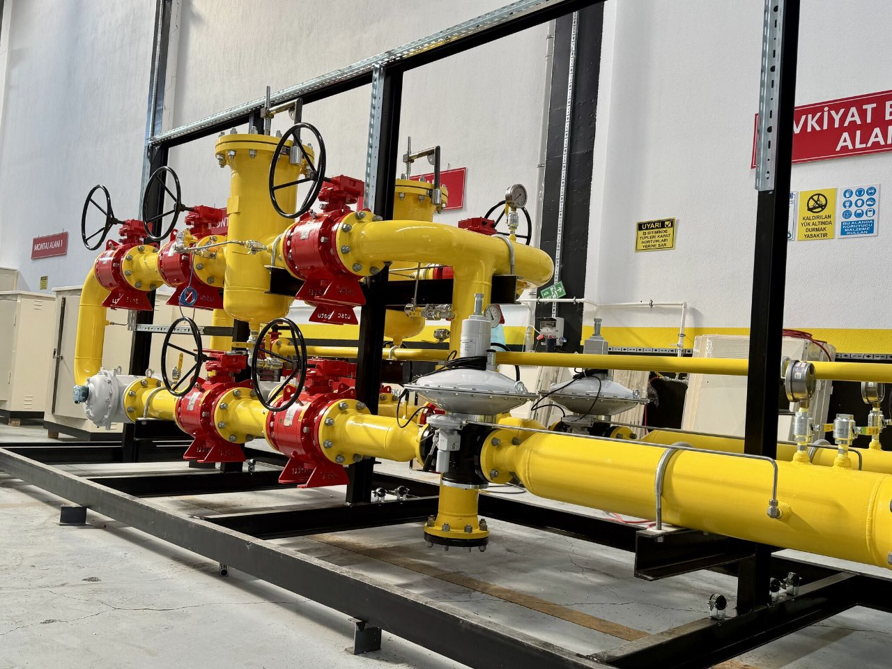
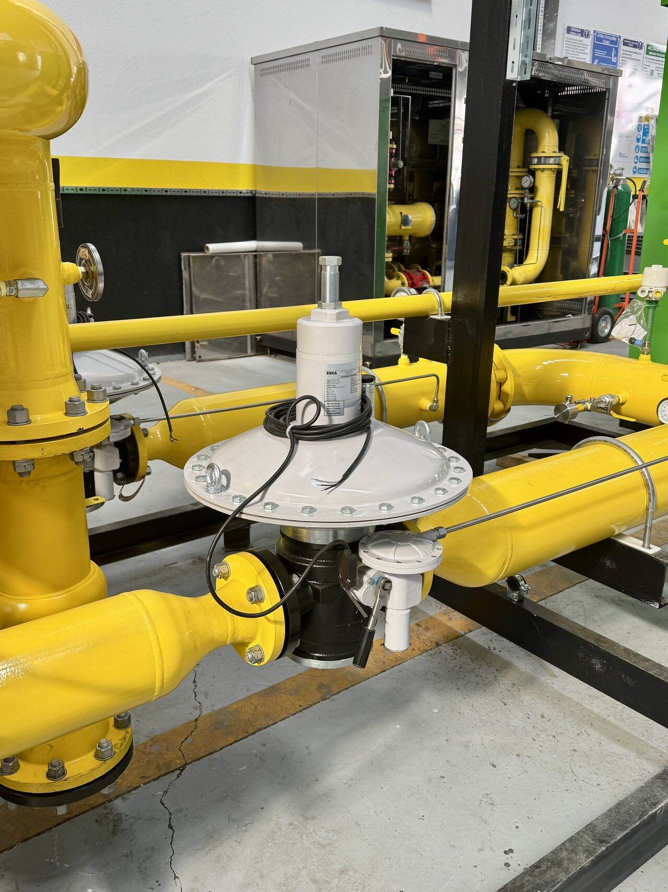

BAŞKENTGAZ RMS-C 2500 m³/h müşteri istasyonu teslimatımız tamamlanmıştır.
Başkentgaz bünyesinde devreye alınacak 2500 m³/h kapasiteli RMS-C müşteri istasyonumuzun mühendislik, imalat ve fabrika kabul test süreçlerini başarıyla tamamlayarak sahaya sevkini gerçekleştirdik. Yüksek güvenlik ve kalite standartlarına uygun olarak tamamlanan bu projenin hayırlı olmasını diler, emeği geçen tüm ekibimize ve iş ortaklarımıza teşekkür ederiz.
RMS-C 2500 m³/h Müşteri İstasyonu Teknik Detaylar
RMS-C 2500 tipi istasyonlarımız, endüstriyel tüketicilerin anlık gaz ihtiyaçlarını sıfır hata ile karşılamak üzere tasarlanmıştır. Çift hatlı (1 Asıl + 1 Yedek) mimarisi sayesinde kesintisiz gaz akışı garanti altına alınır.
- Kapasite Aralığı: 100 m³/h - 10.000 m³/h (Özel tasarım opsiyonlu)
- İstasyon Mimarisi: 1 Asıl + 1 Yedek (Twin Line System)
- Filtreleme Hassasiyeti: G1 / G4 Kartuş Filtre ile 5 mikrona kadar tam filtrasyon
- Sayaç Teknolojisi: Türbinmetre, Rotary, Ultrasonik metre sayaç entegrasyonu
- Emniyet Sistemi: SSV (Slam-Shut Valve) aşırı/düşük/ yüksek basınç koruma kapatması
Detaylı bilgi için tıklayınız.







